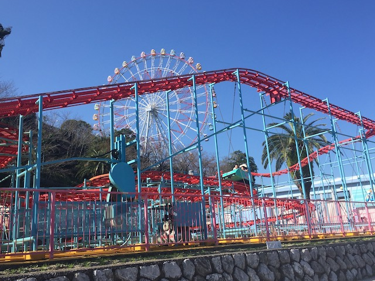
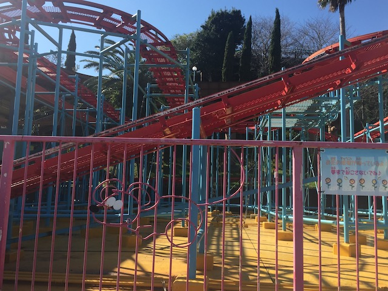
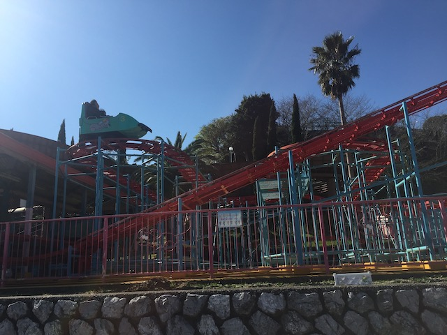
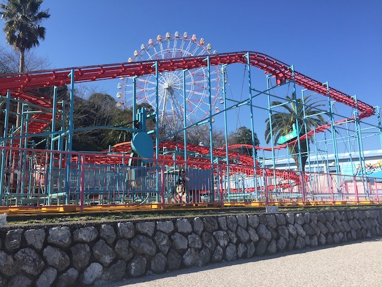
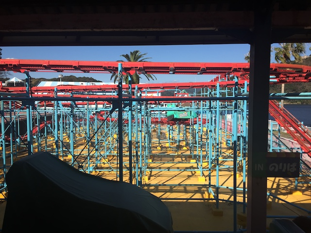

| |
Jungle Mouse Review

We're here at Hamanako Pal Pal, where we're going to be reviewing their Wild Mouse. Now you should know, this is not your standard run of the mill carbon copy Wild Mouse that appears at most parks. And no, it's sadly also not one of those AWESOME versions either. No, this one is....a locally made version. Specifically, it's made by a Japanese company called Sansei Yusoki, and....I've apparently ridden a handful of their rides while in Japan. And....none of them were good. Yeah. This manufacter isn't that good. Their Wild Mouse....it looks like a standard Wild Mouse layout. Except....this ride is BRUTAL!!! So yeah. Get in the low capacity cars (even by Wild Mouse standards, these are low capacity), pull down the lap bar, and away we go! We roll out of the station around a sharp turn and begin climbing the lifthill. We get a great view of Uchiuru Bay and the surrounding area. And also of the ride, but that's not nearly as pleasant to look at. We eventually reach the top, and head through some straight track. Go around a tight turn, quick dip, SLAM!!! Then we hit a midcoures brakes. Oof. Not bad so far, kind of bland, but hey. We're just getting started. Go down another dip, rise up and SLAM!!! DAMN!!! Those laterals are HARSH!!! We then go through some straight track and into the standard Wild Mouse layout. Only MUCH rougher. Somehow, despite being slower than the regular Mice found at most parks, this one is actually rougher going around the turns. So yeah. Slow and Rough. Yeah. This mouse sucks. Go around another set of switchbacks. SLAM!!! Straight track. SLAM!!! Rinse and repeat. Well, at least there's a great view while doing this. Eventually, we break away from the switchbacks, go through half a turn, some straight track, and then through a big swooping turn. Except it's not graceful and frankly, just feels jenky and rickety before heading into a couple more BRUTAL turns. We then head into a downward helix. It doesn't bank and just feels....kind of awkward. And rattly and rough too. SLAM!!! Another harsh turn out of that. BAM!!! Another inverted triangle shaped dip. WHAM!!! Abrupt stop into the brake run. So yeah. This ride sucks. It's slow, mediocre, rough, and just all around sucks. Though to be fair, this is still only the 2nd worst Wild Mouse ever (F*ck the shin-guards on Coast Rider). So it has that going for it. But hey. I guess if you're at Hamanako Pal Pal, want to credit whore, or just ride everything, and this doesn't have a line, I guess you could give it a ride. Sure, it sucks. But there are plenty of worse rides out there. This won't kill you.
5/10
Location: Hamanako Pal Pal
Opened: ???
Built by: Sansei Yusoki
Last Ridden: November 10, 2018
Jungle Mouse Photos






Home
|